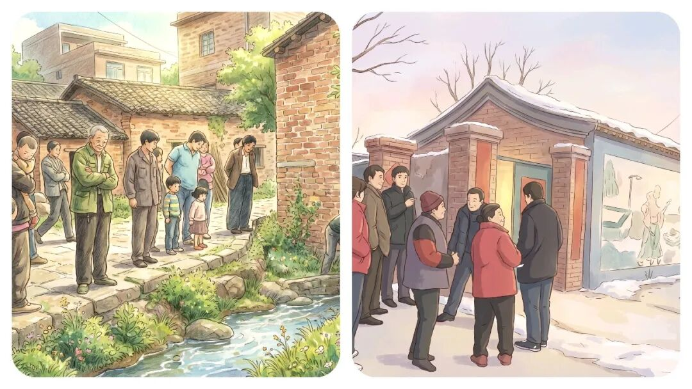
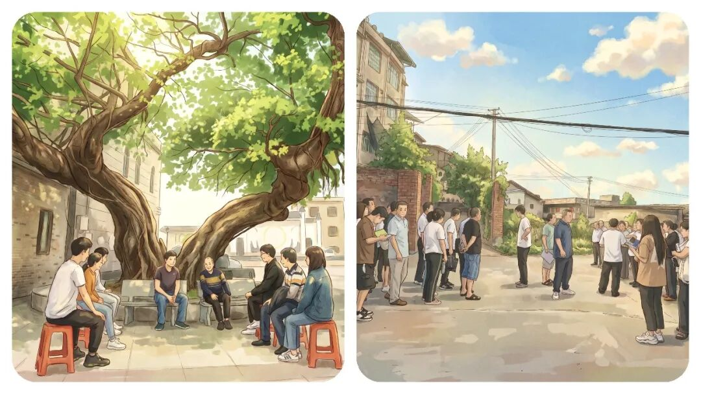
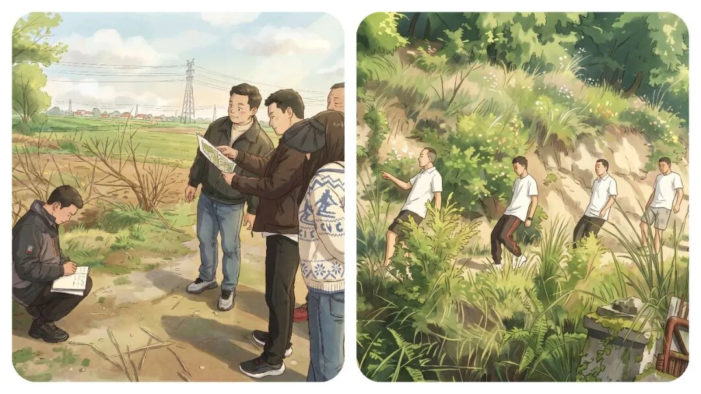
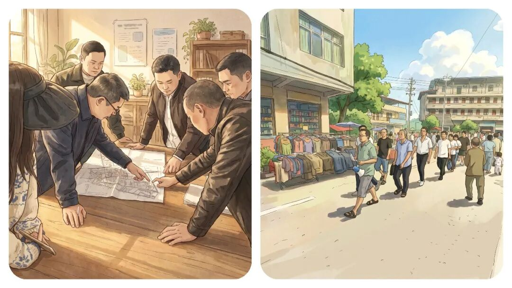

你有没有发现，“乡镇干部”脾气越来越爆了，到底是什么原因？
原创
点击关注👉🏻
点击关注👉🏻
田间烟火
在小说阅读器读本章
去阅读
在小说阅读器中沉浸阅读
点击上方
蓝字
关注我们
田间烟火🔥
大家好，我是【田间烟火🔥】～
不知道你有没有发现？
现在身边的同事，脾气越来越暴躁了？
这到底是怎么了？
路边偶遇、小区办事，谁没碰到点小摩擦？
现在大家都觉得，基层越来越容易起争执。
不少人感慨，随便一句不对付、等个窗口两分钟，气氛就上火，眼看小事都能闹出大动静。
平常赶集、上下班通勤，狭路相逢，原本随便让一下就过去的事，有时一句话说得急，瞬间就顶牛
。
其实参与的人大多没恶意，只不过情绪来了收不住，旁边人也懒得劝，生怕卷进麻烦。

01
基层火药桶：小事为何变大事？
你说这是什么原因？
问题还真不只是脾气直率或者较真难缠。
很多时候，大家不是故意找茬，而是多年琐事积压，压力太大没地方排。
村民为收成、孩子学业操心，工人心里想着收入不稳，生活本就不容易。
碰到一点点小事，心里憋着的压抑，自然就找个出口，发泄出来。
窗口矛盾：双方压力的集中爆发
尤其是办事窗口、代办点更明显。
双方都带着烦躁情绪，沟通常常小问题被无限放大。
工作人员一岗多责、天天迎检、走访、填台账，干活像转陀螺，窗口只有几个人，各类事情一股脑涌进来，还得耐心细致解释。
长期超负荷，谁能一直保持温柔耐心？
在苏州某村，去年办社保窗口就一度出现持续争吵。
有群众催得急，工作人员耐心解释几句，对方不满，场面差点失控。
后来地方分流办理、提前预约，让窗口压力分散，矛盾自然减少。
这种经验，其实不少地方都开始在用。
但反过来，上海某街道推行办事自助，减少人工窗口后，群众反而不适应，自助设备不能解决所有琐事，生硬流程加剧了情绪紧张。
有时候简化流程能缓解压力，有时候却会带来新不满。
说到底，适度调整才靠谱。

02
情绪传导：压力叠加的恶性循环
再说基层工作人员，天天接待情绪焦虑群众，被追问被催促，精神压力大，缓冲空间越来越小。
但条件稍好地区，乡镇，工作人员可以轮岗、分时休息，缓解了不少疲劳。
可多数乡镇干部和村居工作人员没这个条件，琐事连轴转，既要当客服又要做协调员，压力只能自个儿消化
。
氛围大变，大家容易一上来就带着火气。
群众遇到问题不愿等，把正常答复当成敷衍。
干部解释几句，群众听不对味就不舒服。
情绪互相传导，小事较劲，大事变麻烦。

03
该怎么解决：从分流压力到互相包容
怎么办？
这时候，别硬碰硬，更不能急着辩对错。
遇到火气上头的人，先稳情绪，慢慢解释。
材料没准备齐、流程复杂，现场焦急时，工作人员要先安抚，分开步骤讲清楚。
不是简单讨好，而是认清大家都不容易，别互相添麻烦。
有的地方做得不错，云南某县，把高峰办理时间错峰分流，岗位任务协调，工作人员压力减轻，群众交流更平和。
只要办事流程不堵塞，矛盾就减少，说明关键还是压力负担。
但并不是每个乡镇都能轻易做到。
有些地方人手紧、事务多，想改善也不容易。
像河北某村，今年试图改进窗口管理，效果不算理想，群众等候还是多、情绪摩擦也会爆发。
这个问题不是一招就能解决的，需要持续细化。

04
核心根源：压力叠加，不是人心变坏
眼下大家都敏感急躁，干部也是，群众也是。
不是说性格变直，而是压力太大。
说话容易带着火气，抬杠变多，最后心情更糟。
如果发现自己越来越容易发火，最好早点调整状态，别等矛盾激化再后悔。
生活工作节奏变快，收入不稳、生活开支涨，干部任务重、责任压力大
。
日常一句无心话语、一次等待，都变成情绪导火索。
如果能认清这一点，遇到群众带火气过来，别跟着情绪走。
自己压力大时也别把烦躁情绪转嫁给群众。
说白了，负面情绪总要找地方宣泄，但不能都转移到人际交往上。
基层工作本就复杂繁琐，不管是干部还是群众，都不愿成为矛盾冲突的一方。
矛盾、戾气增多根源是压力叠加、节奏紧绷，不是某一方变差。
想让基层关系更顺畅，遇事多冷静换位思考，少些对立，多点包容，哪怕压力大，也别互相消耗。
简单点说，压力管理和流程优先，才让“小火药桶”散掉，沟通才变回温和。
🛒点击下方👇🏻
现在不管办事还是邻里相处，一点小事就容易上火，你平时缓解负面情绪都有什么好办法？评论区交流一下呗～